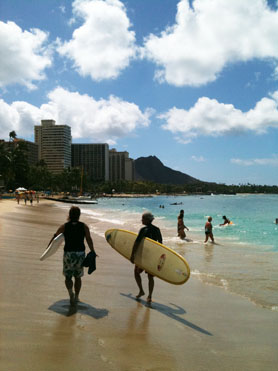

I moved to Oahu, Hawaii in August 2010 with a friend of mine. She had gone to Hawaii for her senior trip and fell in love with the island. When she came back she had told me that she wanted to move there and asked if I would move with her. I had never been to hawaii before and was also ready to move out of my parents house. So I took the opportunity to take the little adventure! Our plan was to be there for 9 months, living in student housing in downtown Waikiki.
We had already made a few friends via facebook that would be living in the same student housing as us, so by the time we got down there we would kind of already know a few people. And my friend had met a couple of guy in the navy while she was down there as well. Who ended up turning into some of my best friends. I didn't think that I would make such good friends in such a short amount of time, and these friends turned into life long ones. Probably some of the most positive, genuine people that I have ever met in my entire life, and I wouldn't change any of it for the world.
I had only ended up living there for a total of about 3 months because some issues at home in Washington came up, and I had decided that it was best for me to move back home. Once I got back home, I definitley was regretting my decision. I was living out of my suitcases for about a month until I finally unpacked and came to terms with my decision. To this day I still talk to evert single friend that I made down there constantly. Since I have moved back I have visited everyone down there every month this last summer and one of my visits was one month long. I have definitley took advantage of having free places to stay down there with my friends.